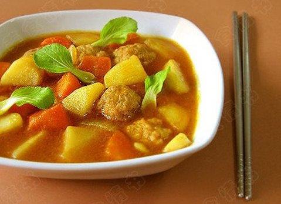
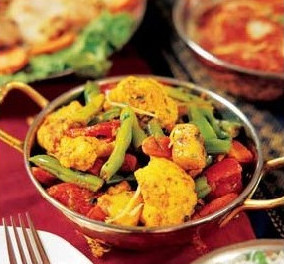
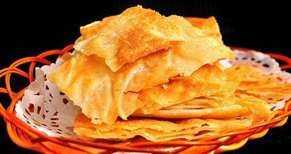

Culinary Art |
Culinary Art |
|  |  |
| Curry Meatballs Soup | Assorted Curry Fresh |
| It originated in India and has now become a "world language". It can warm the stomach. You will feel happiness if you can have this soup in winter. | Many Indians are vegetarians. So the vegetable dishes on the table is essential. It's also a typical India dish. |
|  | |
| Roti Prata | India Curry Wings |
| A famous snack in India. It is made with a good flour in the air with the stunt of flying. It has the characteristics of rich, delicious and crispy. | India Curry Wings are made with chichen, carrots, potatoes. It tastes very dilicious. People from all over the word like this food. |